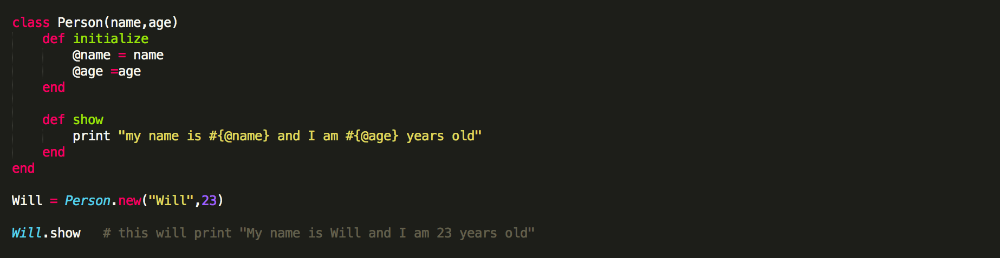

Ruby Classes
Classes are defined in Ruby using the class keyword followed by a name. The name must begin with a capital letter and by convention names that contain more than one word are run together with each word capitalized and no separating characters (CamelCase). Classes come in handy when you wish to construct a whole bunch of similar behaving kinds of objects. When you design a class, think about the objects that will be created from that class type. Think about the things the object knows and the things the object does. Things an object knows about itself are called instance variables and things an object can do are called methods.
Instance variables are created for each class instance and are accessible only within that instance. They are preceded by the @ sign, followed by the variable name. A blank object is not very exciting. In order to start using your object, it must first be initialized (assuming it has any instance variables that needs initializing). This is done via the initialize method.
Both initialize and show methods are instance methods. Just like instance variables, they work with instances of class.